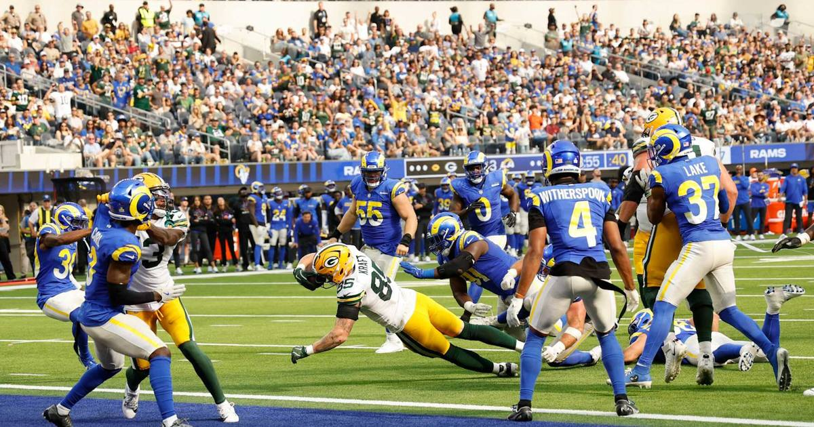

Packers-Rams open Thanksgiving week tonight on Netflix
The NFL plays its first-ever Thanksgiving Eve game tonight — the 6-4 Packers visit the 6-4 Rams at SoFi Stadium at 8 p.m. ET on Netflix, with U2 headlining halftime and a full five-game holiday slate to follow.

Disclosure: this post contains affiliate links. I earn a commission on qualifying purchases.
Thanksgiving football starts a day early this year. The NFL plays its first-ever Thanksgiving Eve game tonight, with Green Bay visiting Los Angeles at 8 p.m. ET on Netflix — and the matchup is a genuine playoff-shaper, not a holiday novelty act.
The matchup
Both teams come in at 6-4, tied in the thick of the NFC race, and the head-to-head history leans hard one way: Matt LaFleur is 5-0 against Sean McVay, his former boss, and Green Bay has won 10 of the last 11 meetings between the clubs, including each of the last five. The most recent one was at this same stadium — a 24-19 Packers win on Oct. 6, 2024.
Record: 6-4; 6-4
Kickoff: Tonight, 8 p.m. ET
Venue: SoFi Stadium, Inglewood, CA
TV: Netflix
Line: Rams -2.5
The form lines point in opposite directions. Los Angeles has won four straight, most recently a 34-6 rout of Arizona. Green Bay is coming off its bye after a 30-10 home loss to Minnesota — and the bye week brought a major reinforcement: Micah Parsons has been cleared and is set to make his season debut tonight.
The Rams, meanwhile, are doing it short-handed at receiver, with Puka Nacua out for the rest of the regular season. That puts even more on Matthew Stafford and the ground game in a matchup where the Packers' pass rush just got its best player back.
A new holiday tradition
This is the start of something the league clearly wants to make permanent. Netflix holds the Wednesday-night slot through the 2029 season, and the streamer is treating the debut like a tentpole: pregame coverage begins at 6 p.m. ET, and U2 headlines the halftime show, celebrating the band's 50th anniversary. It's the kind of halftime booking usually reserved for the Super Bowl, dropped into a Wednesday night in November.
The full Thanksgiving week slate
Tonight is just the opener. Five games stretch from Wednesday through Friday, each on a different platform:
Wed, Nov. 25: Packers at Rams; 8 p.m.; Netflix
Thu, Nov. 26: Bears at Lions; 1 p.m.; CBS / Paramount+
Thu, Nov. 26: Eagles at Cowboys; 4:30 p.m.; FOX
Thu, Nov. 26: Chiefs at Bills; 8:20 p.m.; NBC / Peacock
Fri, Nov. 27: Broncos at Steelers; 3 p.m.; Prime Video
Thursday's tripleheader opens with Chicago at Detroit at 1 p.m. ET on CBS, the traditional early kickoff, before Philadelphia visits Dallas and Kansas City closes the holiday at Buffalo. The Black Friday game — Denver at Pittsburgh — wraps the week.
Watch
Watch: Packers at Rams Game Preview | NFL Week 12 Picks & Predictions — CBS Sports HQ. JP Acosta and Mike Renner preview the matchup, covering playoff positioning, LaFleur's 5-0 mark against McVay, Parsons' clearance for his season debut, the Rams' receiving corps without Puka Nacua, and their game prediction.
Gear up: Packers and Rams jerseys and gear (Love, Parsons, Stafford, Nacua): via Fanatics